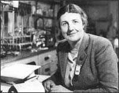

Janet Maria Vaughan
1899–1993
Dr. Janet Vaughan helped save countless lives during World War II, thanks to the foresight that led her to open one of London's first blood banks.
Vaughan was home-schooled at her home in Bristol, England, until she turned fifteen. When she reached college age, it took her three tries to pass the entrance exams at Oxford University's Somerville College. She earned degrees in physiology and pharmacology and then won a scholarship to study medicine at London's University College Hospital. She became a doctor in 1924 and began studying blood diseases, especially anemia. She married and had two daughters, but didn't give up her research.
During the Spanish Civil War, Vaughan served in the Spanish Medical Aid to the International Brigade, where she learned about a method the Spanish had developed for storing blood. When she returned to England, she suggested that the British should use similar methods to store blood for transfusion, especially since it seemed increasingly likely that war would soon break out across Europe. Her proposal was adopted, and she was appointed director of the North West London Blood Supply Depot.
When World War II ended in 1945, Vaughan was one of the first doctors sent to Germany to work with the survivors of the Nazi concentration camps and develop new ways to treat starvation. In the fall of 1945, she became principal of Somerville College, where she remained until her retirement in 1967.
A strong advocate for women's rights, Vaughan served on numerous important committees, including the Goodenough Committee, which was responsible for reviewing the selection procedures used by medical schools in England, and the Royal Commission on Equal Pay. In 1957 she was made a Dame of the British Empire, and in 1979 she became a Fellow of the Royal Society.